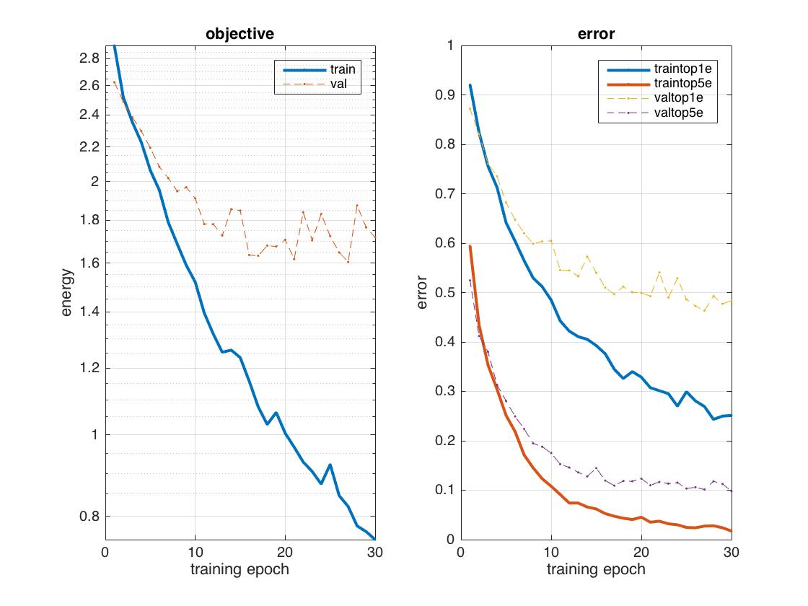
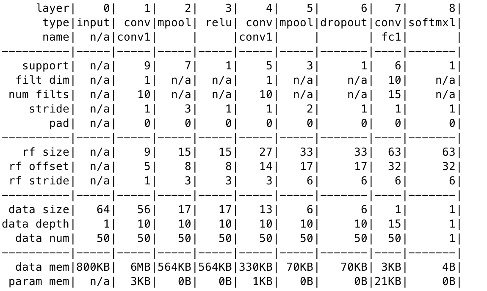
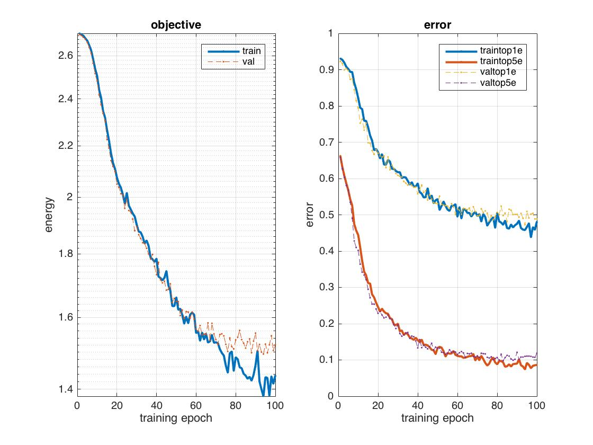
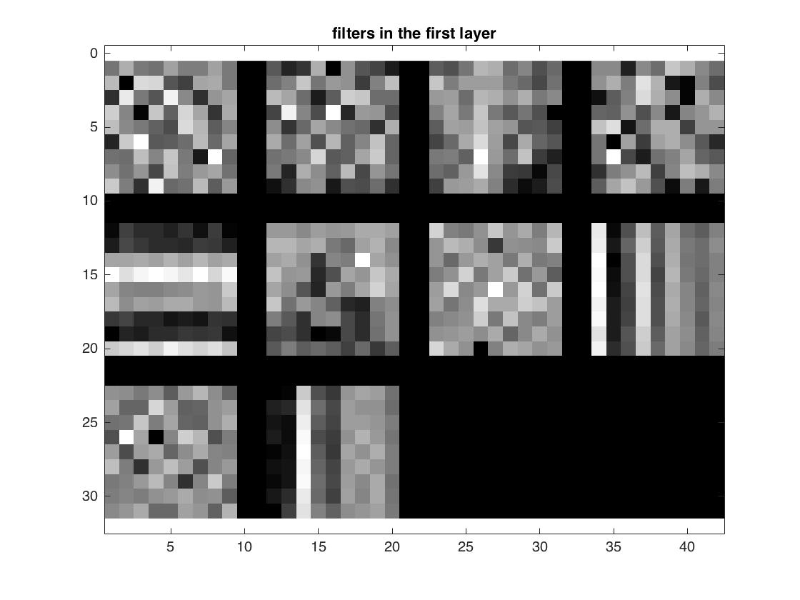
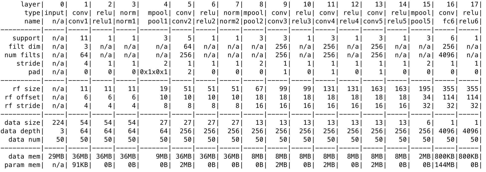
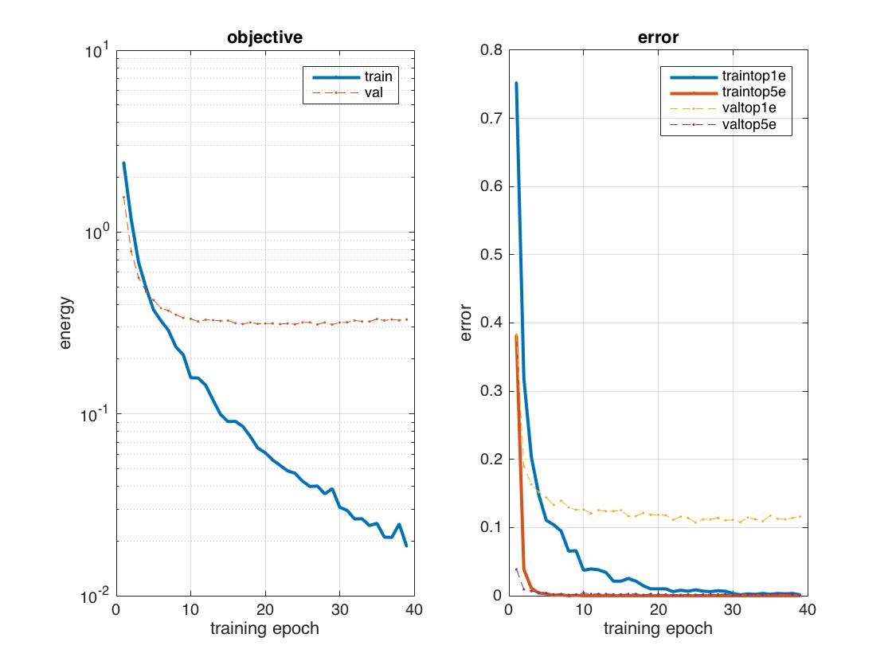
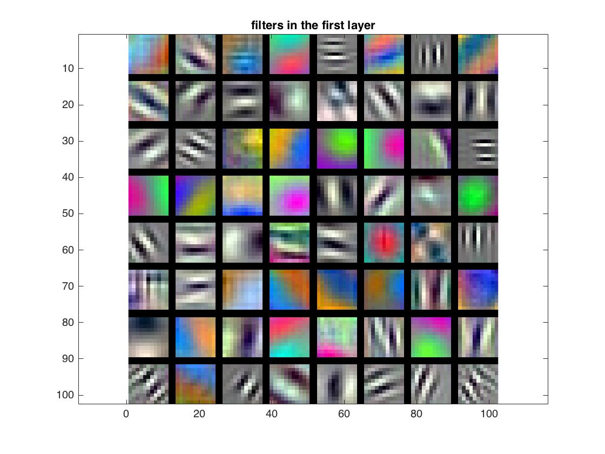

Project 6 / Deep Learning
For this project, we will design and train deep convolutional networks for scene recognition. In previous project, I implemented a bag of features representations that achieved ~60% accuracy, and I also used fisher encoding techniques that achieved ~80% accuracy on 15-way scene classification. For this project, I started with training a deep network from scratch, and then I fined tuned a pre-trained deep convolutional networks that achieved better accuracy of 90%.
Part 1: Training a deep network from scratch
I performed the following steps to improve the neural network:
1. Jittering: I mirrored half of the training images so that I could get extra 50% images from training data.
2. Zero Center: I zero centered each image by subtracting the mean from original pixel values
3. Regularization: I added a dropout layer to fight overfitting. This would prevent the output layer from over relying on the previous layer.
After these adjustments, I achieved an accuracy above 50%, and the highest 53.4% with 100 epochs.Result:

Part 1 - Building a deeper neural network
I added another convolutional layer and max-pool layer and achieved an accuray of 52.7% with 100 epochs.
Visualization of the network:
Result:
 
Part 2 - Fine-tuning a pre-trained deep network
In part 2, I changed grey image into RGB image, resized them to 224 by 224 by 3 and substracted the mean. Then, I made the following edits to the pre-trained network: I edited the final two layers, fc8 and the softmax layer. fc8 now has an input data depth of 4096 and an output data depth of 15. I added both of dropout layers back in between fc6 and fc7 and between fc7 and fc8.
Visualization of the network:

Fine tuning trained deep learning network results in accuray close to 90% within 40 epochs.
Result:
 